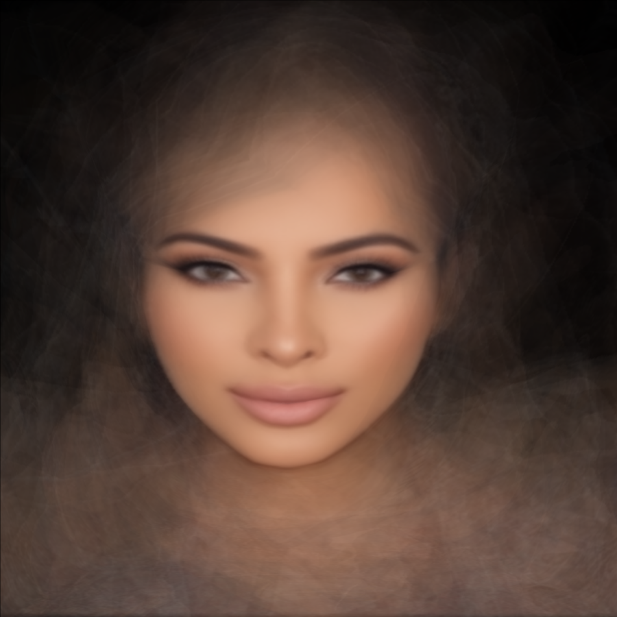
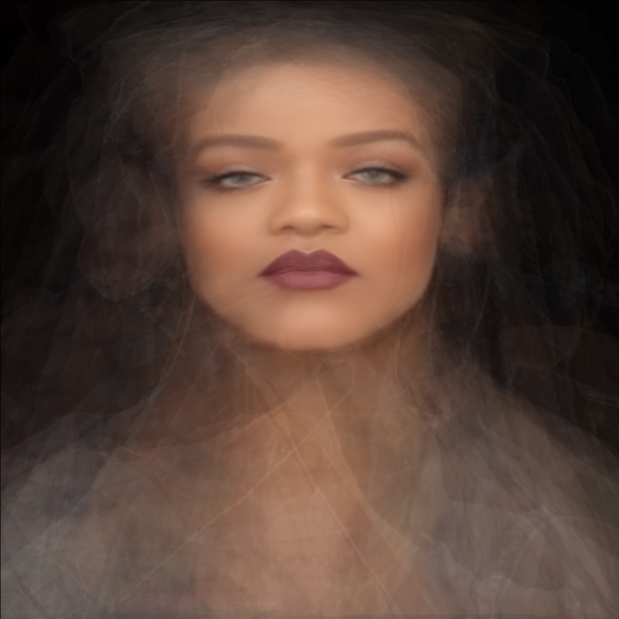
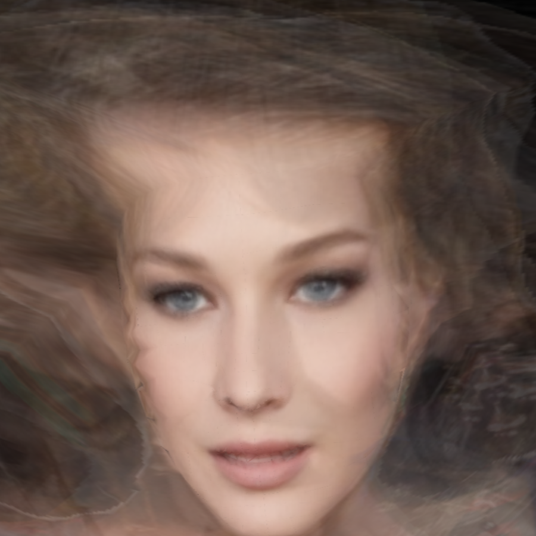

Facial Feedback
Some faces go viral, inspiring many to undergo different kinds of digital and cosmetic augmentation.
The following portraits are generated from dozens of images of Bella Hadid, Rihanna and Kim Kardashian’s doppelgängers. Dlib (C++ machine learning library) was used to detect each celebrity’s facial landmarks and the resulting constellations of coordinates were treated as a focal lens to fine-tune and average the faces of each doppelgänger into a collective identity. I want to continue exploring how platforms mediate monocultures and outliers.



Kim (left) wears Kami Osman, Sonia Ali, Amra Olevic Reyes, Claire Leeson, Naya Rivera, Thalia Almodovar, Jelena Karleuša, Jelena Peric, Larsa Pippen and Monyy Monn. Rihanna (middle) wears Priscila Beatrice, Andele Lara, Renee Kujur, Yna Sertalf and @notavrey. Bella (right) wears Jennifer Lawrence, Carla Bruni, Isabelle Mathers and Joann van den Herik.